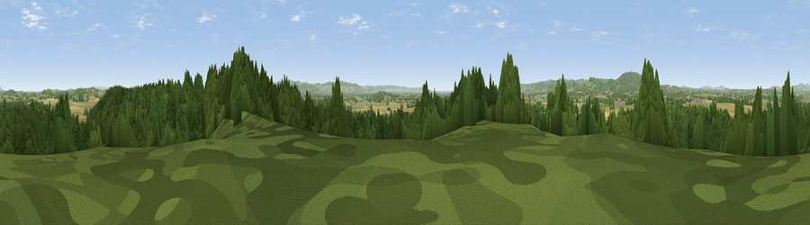

Rodway Hill
#32071 in England · top 69% of its area beats it · near BulleyWhere it is
The exact computed spot (SO 77275 19875). Click the marker for map links.
The view, rendered

A 360° render of this exact spot computed from the terrain model, tree cover and land cover — summer colours, afternoon light, calibrated against photographs of famous viewpoints. Real trees, hedges and buildings will differ in detail.
The panorama
Grey silhouette: terrain skyline in each direction (720 bearings, Earth curvature and refraction included). Dashed green: skyline with trees (+15 m) and buildings (+8 m) as obstacles. Blue strip: how far the ground is visible on each bearing.
Where the view opens
Wedge length = distance to the farthest visible ground on that bearing (vegetation-aware). Rings at 10, 25 and 50 km.
What fills the view
52% woodland · 25% cropland · 21% grassland · 2% built-up
Angular shares of the visible panorama (visual magnitude), not map area. Landscape diversity 0.48 (0–1 Shannon).
Key numbers
More beautiful places nearby
The staircase of upgrades: each row has a higher view potential than everything closer. Driving times are estimates from straight-line distance, calibrated against real road routing — check an actual route before setting out.
| Place | Direction | Drive | Score |
|---|---|---|---|
| Viewpoint near Rudford | NE · 1 km | ~4 min | 51.9 |
| Viewpoint near Lassington | NE · 4 km | ~9 min | 58.9 |
| Viewpoint near Hartpury | NE · 6 km | ~13 min | 60.0 |
| Viewpoint near May Hill | W · 6 km | ~13 min | 68.0 |
| Viewpoint near Huntley | W · 7 km | ~14 min | 75.0 |
| Viewpoint near May Hill | W · 8 km | ~16 min | 76.1 |
| Viewpoint near Whaddon | SE · 8 km | ~17 min | 77.7 |
| Viewpoint near Brookthorpe | SE · 11 km | ~21 min | 78.0 |
51.87697, -2.33152 · source: dobih hill · position refined by local search. Computed location — check access rights before visiting.